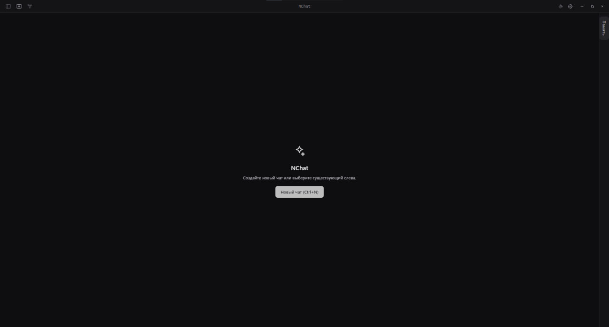

Работа с файлами
Чтение, поиск по имени и содержимому, правка фрагментов, создание, копирование и перемещение — прямо из чата.
Настольный чат с языковыми моделями, который работает с вашим компьютером напрямую: читает и пишет файлы, выполняет команды, управляет git и подключает MCP-серверы.

Чтение, поиск по имени и содержимому, правка фрагментов, создание, копирование и перемещение — прямо из чата.
Выполнение команд, запуск программ, процессы, службы и переменные среды под контролем подтверждений.
Статус, диффы, история, коммиты, ветки, push и pull без переключения на терминал.
Подключение внешних инструментов по протоколу MCP. Состав инструментов зависит от подключённых серверов.
Параллельная работа в нескольких диалогах с индикатором состояния каждого запроса.
HTML, SVG и Mermaid-диаграммы из ответа модели рисуются рядом с кодом.
Один клик до…
Портативная сборка для Windows. Файл сохранится в папку загрузок или туда, куда вы укажете — установка не требуется.
Скачать NChat.exeWindows 10 и новее · x64